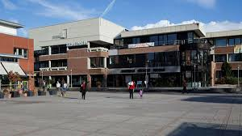

Rathaus

Wissenswertes zur Verwaltung & Politik
Auf einen Blick - Wichtige Kontakte
RathausRathausplatz 3665760 EschbornTelefon: 06196/490-0Mail: info@eschborn.de + I3Empfang: Montag, Dienstag, Donnerstag 8 - 16 Uhr und Mittwoch 8 - 18 Uhr, Freitag 8 - 12 Uhr Dienstleistungszentrum
(Bauhof) Graf-Zeppelin-Straße 5-765760 Eschborn Telefon: 06196 - 490-501Mail: bauen@eschborn.de Öffnungszeiten: Montag-Freitag 08.00 - 12.00 Uhr, Mittwoch 15.00 - 16.30 Uhr Annahme Grünabfälle: Montag,
Dienstag und Donnerstag 7:30-15:30, Mittwoch 7:30-17:30 und Freitag 7:30-12:00 Abfallkalender Standesamt E-Mail: standesamt@eschborn.deTelefon:
06196/490-205.
Bürgerservice
Bürgerbüro (Services zum Einwohnermeldewesens) Unterortstraße 27A E-Mail: buergerbuero@eschborn.deTelefon: 06196/490-999 Öffnungszeiten BürgerbüroMontag: 8-12 Uhr und 13-16 UhrDienstag: 8-12 UhrMittwoch: 8-12 Uhr
und 14-18 UhrDonnerstag: 8-12 Uhr Freitag: 8-12 UhrJeden 1. Samstag im Monat: 9-13 UhrÖffnungszeiten Verwaltungsstelle NiederhöchstadtDienstag: 8 bis 13 UhrDonnerstag: 10 bis 15 UhrÖffnungszeiten
Verwaltungsstelle Niederhöchstadt: Dienstag 8 - 13 Uhr und Donnerstag 10 - 15 UhrDienstleistungen & Services der Stadt/Behörden sind über den A-Z Katalog zu finden:Hier klicken bitte! Zuständigkeiten der
Fachdienste Servicekatalog A bis Z
Politik & Gremien
Magistrat ist die laufende Verwaltung der Stadt und hat folgende Mitglieder: Karlheinz Gritsch (CDU), Stadtrat (Dezernat III - Brandschutz) Helmut Bauch (FWE), Stadtrat (Dezernat IV - Seniorenarbeit)
Markus Depping (CDU), Stadträtin Dr. Annette Christoph (FDP), Stadtrat Adolf Kannengießer (SPD), Stadträtin Monika Reckhard (Grüne), Stadträtin Jutta Rümann-Heller (CDU), Stadtrat Dr. Willi Schnorpfeil (Grüne),
Stadtrat Wolfram Schuster (CDU), Stadträtin Susanne Sievers (Die Linke), Stadtrat Thomas Spriegel (FDP), Stadtrat Bernd Wilhelm (SPD), Stadtrat. Die Stadtverordnetenversammlung ist das oberste Organ der Gemeinde
und wird alle fünf Jahre von den Bürgern gewählt. CDU: M. von Sternheim (Stadtverordnetenvorsteher); M. Agosta, S. Brekner, M. Stewin, S. Fritsch, K. Geiger, C. Oberlis (Fraktionsvorsitzender), J. Oberlis,
L. Petermann, P. Pritz-Bode, F. Schneider, FDP: C. Ackermann (Fraktionsvorsitzender), R. Engler, A. Geiger, M. Geiger, N. Groß, T. Henrich, C. Scherer, Bündnis 90/Die Grünen: J. Blomberg,
U. Ebert (Fraktionsvorsitzende), S. Henschel, Stefan (Fraktionsvorsitzender), C. Hillen, S. Mosbach, S. Niklas, F. Eckert SPD: Dr. S. Blum-Geenen, R. Birkert, S. Kutscher, U. Richter, E. Sauter, B. Veeck,
Bernhard (Fraktionsvorsitzender) FWW: L. Becking, A. Boulaich, M. Ishak, R. Seidel, Regine (Fraktionsvorsitzende) DIE LINKE: F. Hornung, (Fraktionsvorsitzender), R. Zenk. Ausländerbeirat vertritt die
Interessen der ausländischen Einwohner gegenüber den städtischen Gremien und hat umgekehrt die besondere Aufgabe, die Organe der Gemeinde in allen Angelegenheiten, die ausländische Einwohner betreffen,
zu beraten. Mitglieder: Massimiliano Agosta (Vorsitzender), Jozef Burda (stellvertretender Vorsitzender), Nandini Narayan, Maricela Mejia Buezo, Sayed Djawid Athar (ehem. Mitglied), Marian Torba. In Eschborn
gibt es 2 Kinderbeiräte (für Eschborn bzw. Niederhöchstadt). Die Mitglieder werden von den örtlichen Schulen benannt und besuchen dort in der Regel die Klassen 3 bis 6. Weitere Infos auf der Seite des
Kinderbeirates. Der Jugendbeirat hat 18 Mitglieder, die von der Heinrich-von-Kleist-Schule, dem Ausländerbeirat, dem Jugendzentrum, dem Café Perplex und den Kirchen-gemeinden benannt werden. Mehr Infos findet
ihr unter www.jugendbeirat-eschborn.de
Karriere
Zu den Stellenausschreibungen bitte hier klicken
Zu den Ausbildungsmöglichkeiten bei der Stadt bitte hier klicken